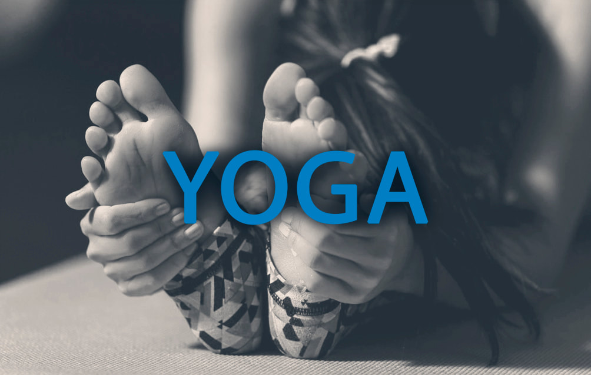

Yoga
El Yoga es una ciencia completa de la vida, que se originó en la India hace muchos miles de años. Es el sistema de desarrollo y evolución personal más antiguo que hay en el mundo, y abarca el cuerpo, la mente y el espíritu.
El Yoga para principiantes es una práctica que involucra posturas físicas, técnicas de respiración y meditación. Se enfoca en mejorar la flexibilidad, la fuerza y la relajación del cuerpo, mientras se promueve la conexión mente-cuerpo.